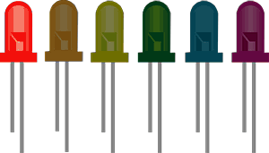

<div #shadowPopUp class="shadow">
  <div class="loader-container p-4">
    <ng-container *ngIf="loading">
      <div class="lds-spinner">
        <div></div>
        <div></div>
        <div></div>
        <div></div>
        <div></div>
        <div></div>
        <div></div>
        <div></div>
        <div></div>
        <div></div>
        <div></div>
        <div></div>
      </div>
    </ng-container>
    <ng-container *ngIf="!loading">
      <ng-container *ngIf="isLoadOk">
        <div class="my-4 mx-2">
          
        </div>
        <div class="my-4 mx-2 text-center">
          <button
            type="button"
            class="btn btn-primary"
            (click)="stopSequence()">
            <fa-icon [icon]="faHandPaper"></fa-icon> Stop sequence
          </button>
        </div>
      </ng-container>
      <ng-container *ngIf="!isLoadOk">
        <div class="text-center mb-4">
          <fa-icon
            class="error-icon"
            [icon]="faExclamationTriangle">
          </fa-icon>
        </div>
        <div class="text-center my-4">
          Ups! An error has been produced!
        </div>
        <div class="text-center mt-4">
          <button type="button" class="btn btn-danger" (click)="closeLoader()">
            <fa-icon [icon]="faTimesCircle"></fa-icon> Close
          </button>
        </div>
      </ng-container>
    </ng-container>
  </div>
</div>
